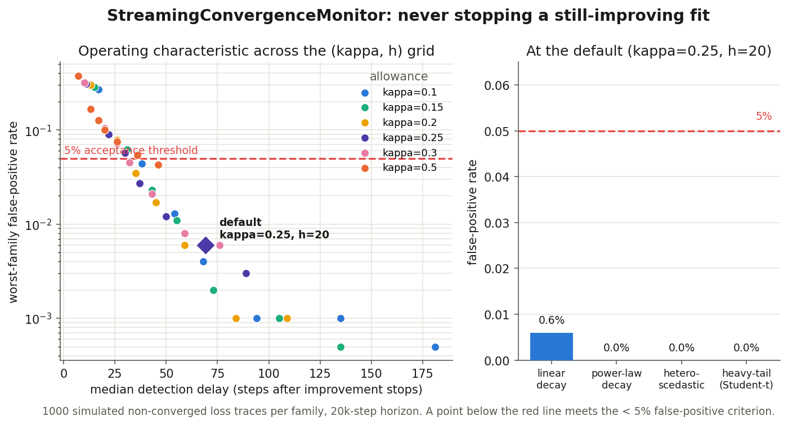
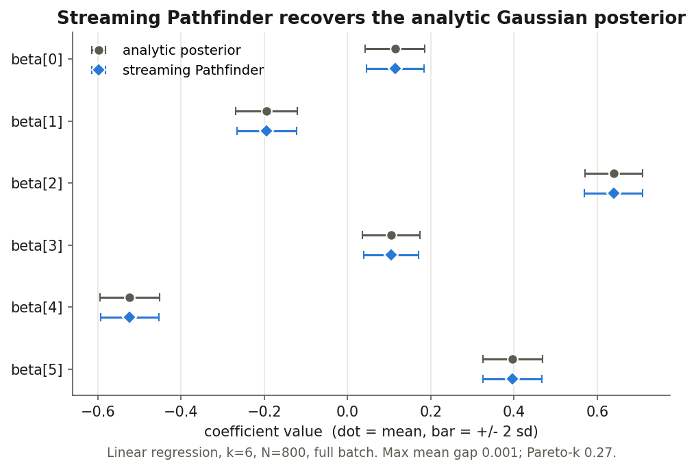
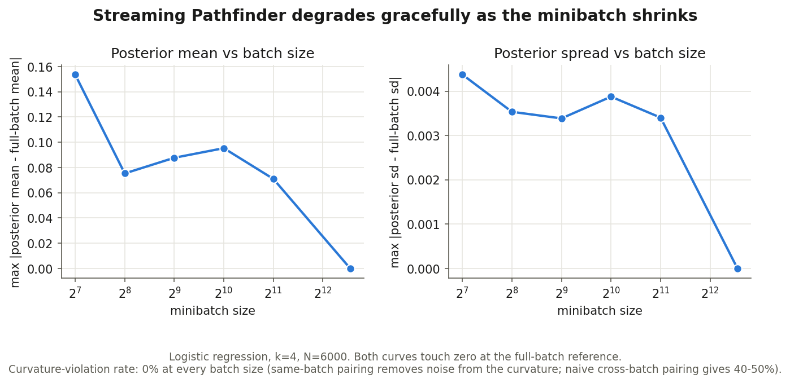

Week 5 ended on a promise: the next piece was an online convergence monitor, so a streaming fit could decide when to stop from noisy ELBO estimates rather than a fixed step count. This week I built it — and then carried on into the Phase 2 headline, a Pathfinder that runs on minibatches. Both live in a small lab of their own for now, each with a test suite and a calibration study, so that when I lift them upstream they arrive as clean, self-contained diffs.
Stopping is a change-detection problem, not a plateau
The obvious way to stop a fit is to watch the loss and quit when it stops improving.
That does not work here. Each step's loss is a single Monte-Carlo sample of a
negative ELBO: its step-to-step noise dwarfs the improvement it is trying to measure,
and it is autocorrelated through the parameters. “No new best in the last
W steps” just fires on the first unlucky run of noisy samples, long
before the fit has actually settled.
The right frame is sequential change detection. Standardize each step's improvement
delta_t = loss_{t-1} − loss_t by a robust running scale to get
z_t, and accumulate a one-sided CUSUM:
S_t = max(0, S_{t-1} + (kappa − z_t)), stop when S_t > h
While the fit keeps improving by more than kappa robust standard
deviations per step, S stays pinned at zero; only a sustained run of
sub-kappa improvement makes it climb past the threshold h.
It is the difference between asking “has it been flat lately?” and asking
“has the rate of improvement collapsed and stayed collapsed?”
import pymc as pm
from pymc_streaming_lab import StreamingConvergenceMonitor
with model:
approx = pm.fit(100_000, callbacks=[StreamingConvergenceMonitor()])
# stops on its own once the ELBO stops improving, and returns the partial fitThe part I did not expect was how easy it is to get the scale wrong. My first cut, tuned only on a clean linearly-decaying curve, called convergence early on 86% of the heavy-tailed traces — it was declaring victory on fits that were still moving. Two changes, both forced by the calibration study rather than guessed, fixed it: estimate the scale from the successive differences of the increments (von Neumann) so a fast-decaying trend can no longer inflate it, and winsorize each standardized increment so a single loss spike contributes only bounded evidence. Together they take the worst-family false-positive rate from that 86% down to 0.6%.

kappa=0.25,
h=20) stops a genuinely-converged fit within ~70 steps while false-stopping a
still-improving one at 0.6% — and 0.0% on the three harder families.
Streaming Pathfinder: pair the curvature on one batch
Pathfinder builds a Gaussian posterior approximation from an L-BFGS optimization
trajectory, scoring the Gaussian at each iterate by its ELBO and keeping the best one.
Upstream, it hands the optimization to SciPy's L-BFGS-B, which assumes a
deterministic objective — its Wolfe line search and convergence tests
quietly break once the gradients come from minibatches. So the streaming version needs
its own quasi-Newton loop. Everything after the optimizer — the diagonal-plus-low-rank
Gaussian, the sampler, the Pareto-smoothed importance resampling — is reused from
the existing Pathfinder unchanged.
The one subtlety that actually matters is how you form each curvature pair
(s, y). The tempting version differences the gradient across two
different batches; but then the minibatch noise does not cancel, and
s·y goes negative all the time — which L-BFGS cannot use. The
fix is to pair on a single batch (Schraudolph et al., 2007):
y = ∇f_B(x_new) − ∇f_B(x) with the same B on
both sides, so the noise cancels in the difference. Concretely, a fresh batch is written
into the model's pm.Data placeholder before each optimization step, so every
gradient inside a step is taken on the same batch. Iterate selection is done afterward on
one fixed evaluation batch with common random numbers, so the winner is not just whichever
step happened to see the luckiest data.
Two checks. On an exactly-Gaussian posterior — linear regression, where Pathfinder should be near-exact — the streaming fit matches the closed-form posterior to Monte-Carlo error:

And as the minibatch shrinks from the full 6,000 rows down to 128, the fit degrades gracefully rather than falling apart — because same-batch pairing keeps the curvature clean, the fraction of rejected curvature pairs stays at 0% the whole way down, where naive cross-batch pairing sits at 40–50%.

Why a separate lab
Neither piece is a one-liner, and both reach into parts of PyMC that the earlier PRs are
still moving through review. So rather than pile them onto an open PR, I built each in a
small repo of its own — numpy-only where it can be, with its own tests, continuous
integration, and the calibration figures above. The point is that each one has a known
upstream home and can be lifted there as a self-contained change: the convergence monitor
is a Callback subclass for core PyMC, and the streaming Pathfinder slots into
pymc-extras right next to the Pathfinder it reuses.
What's next
From here the work goes upstream: the convergence monitor as a callback in core, and the
streaming Pathfinder as a dataloader= path alongside the existing
fit_pathfinder in extras — the latter aligning with Jesse's new ADVI
API, the rewrite I ran into last week. It is also midterm-evaluation week, which is a good
moment to have the two remaining proposal pieces working with evidence behind them rather
than as plans. More soon.
Links. DataLoader PR #8325 · DataLoader in extras #698 · Trainer PR #8333 · Jesse's new ADVI API #635 · GSoC project page · Mentors @zaxtax · @fonnesbeck